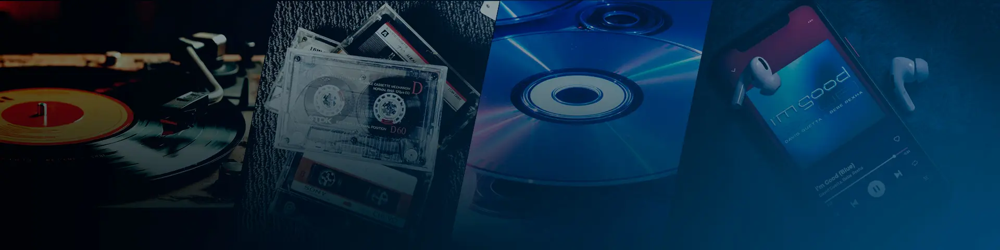

La zona clásica
Lo mejor de los 70, 80, 90 y 2000.
Viernes de 21:30 a 23:00 h
Conduce: Gerardo Espínola

Los clásicos que marcaron época y la mejor música actual.
Escuchar en vivoClásicos y éxitos actuales desde Villarrica.
Lo mejor de los 70, 80, 90 y 2000.
Viernes de 21:30 a 23:00 h
Conduce: Gerardo Espínola
Lo mejor del Pop, hits y mucho más
Domingos de 17:00 a 19:00 h
Conduce: David Reyes